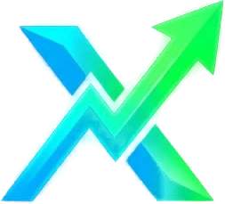

VectorX helps people understand market structures, explore different financial segments, recognise risks, and make more informed decisions through accessible information and structured learning.

Market structures, instruments and how segments work.
Forex, stocks, F&O, commodities and digital assets.
Volatility, leverage and capital protection.
Informed choices with transparency at every step.